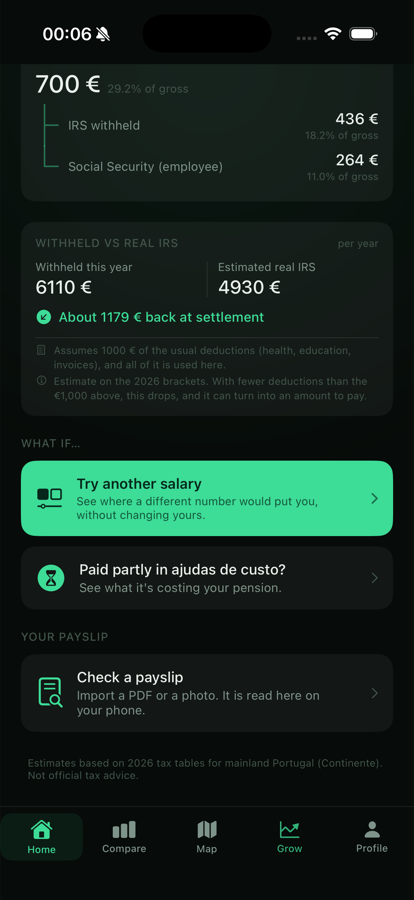
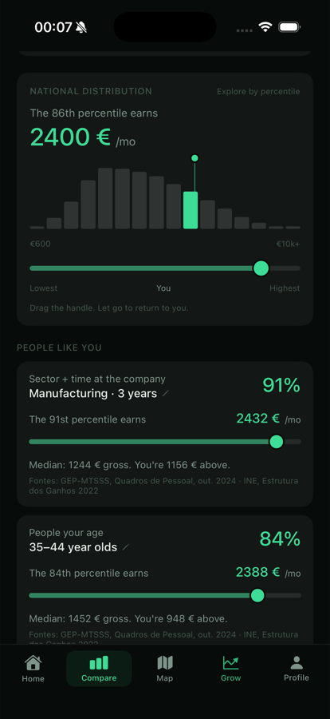
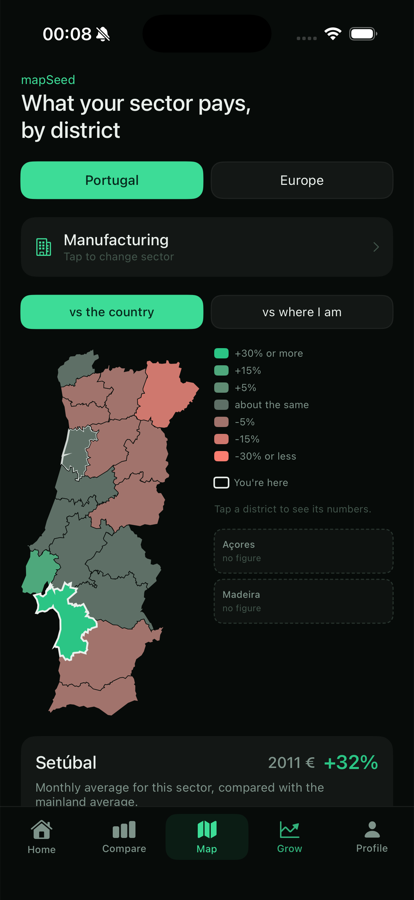
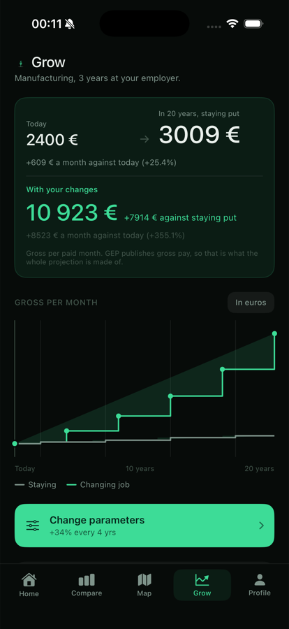
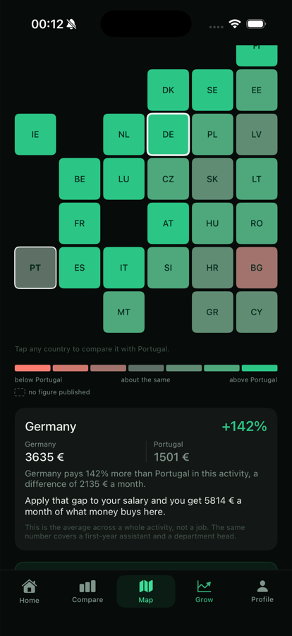
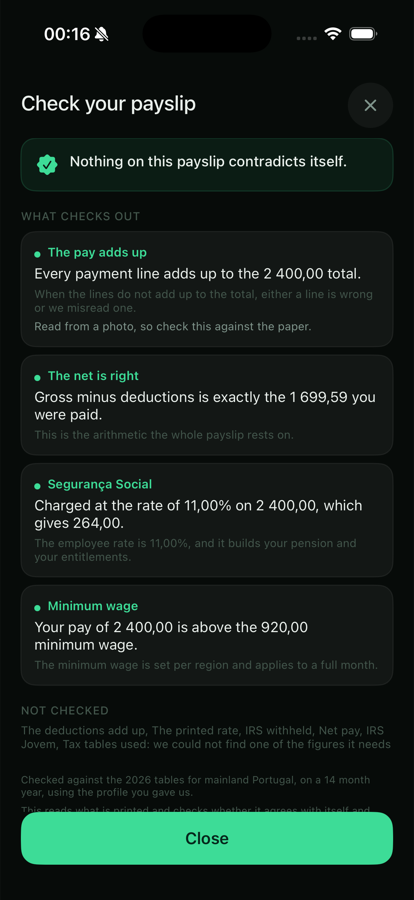

An iOS app that tells you what a salary in Portugal actually means. What lands in your
account, what it costs your employer, where it sits against everyone else, what it might
be in twenty years, and whether your payslip adds up.
Everything below is the real app, recorded in the iOS Simulator. The clips run at speed
because the pauses were mine, not the app's. The app is bilingual and auto-detects; these
are in English. Every figure comes from a published table, and nothing typed into the app
ever leaves the phone.
The salary
One number in, and the app works out the rest: net, the full cost to the employer, where
that sits nationally, what it looks like across the EU, and what twenty years of staying
put is worth against moving.
What to watch for
2 400 € gross becomes 1 700 € net, and costs the employer 2 970 €.
The annual settlement card writes out every assumption it made, including the ones
that might not apply.
The distribution is scrubbable. Drag anywhere on it to see what
that percentile earns, then let go and it returns to you.
Açores and Madeira are drawn with no colour and labelled "no
figure", because the survey behind the map covers the mainland only. The app says
so rather than inventing a shade.
The projection is a staircase, not a curve, because the source
publishes six tenure bands and not a smooth function.
Set the negotiated raise to zero and the app says moving jobs
costs you 0.9 points a year. Raise it and the verdict flips.
Germany pays 142% more in this sector, and the app applies that
ratio to your own salary instead of putting a foreign average beside a Portuguese
one.
The payslip
You hand it a PDF or a photograph of a Portuguese payslip and it tells you whether the
arithmetic holds. It runs entirely on the phone, nothing is uploaded, and nothing is kept:
close the screen and the file is gone.
What to watch for
It asks you to confirm what it read before it will judge anything,
because this one came from a photograph and recognition can misread a digit.
Four checks pass. The lines add up to the total, gross minus
deductions is exactly the net, Social Security is 11% of the base, and the pay
clears the minimum wage.
Six checks refuse to run, and say so by name, with the reason: it
could not find one of the figures they need. A check that quietly did not happen
reads as a check that passed, so this app will not do that.
It names the tables it used: the 2026 rules for mainland Portugal,
on a fourteen month year.
Screens

Home. The deductions, and an annual settlement that states what it assumed.

Compare. The national curve, then cohorts, each naming its source.

Map. What this sector pays by district. The islands have no figure.

Grow. Staying put against moving, drawn as the steps the data has.

Europe. Twenty seven countries, in euros or purchasing power.

The payslip verdict, including the checks that declined to run.